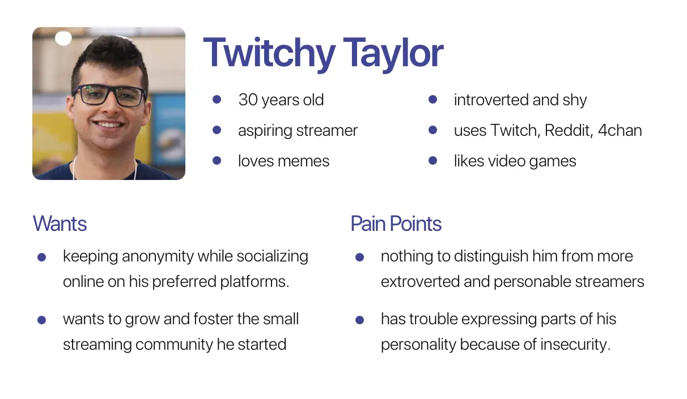
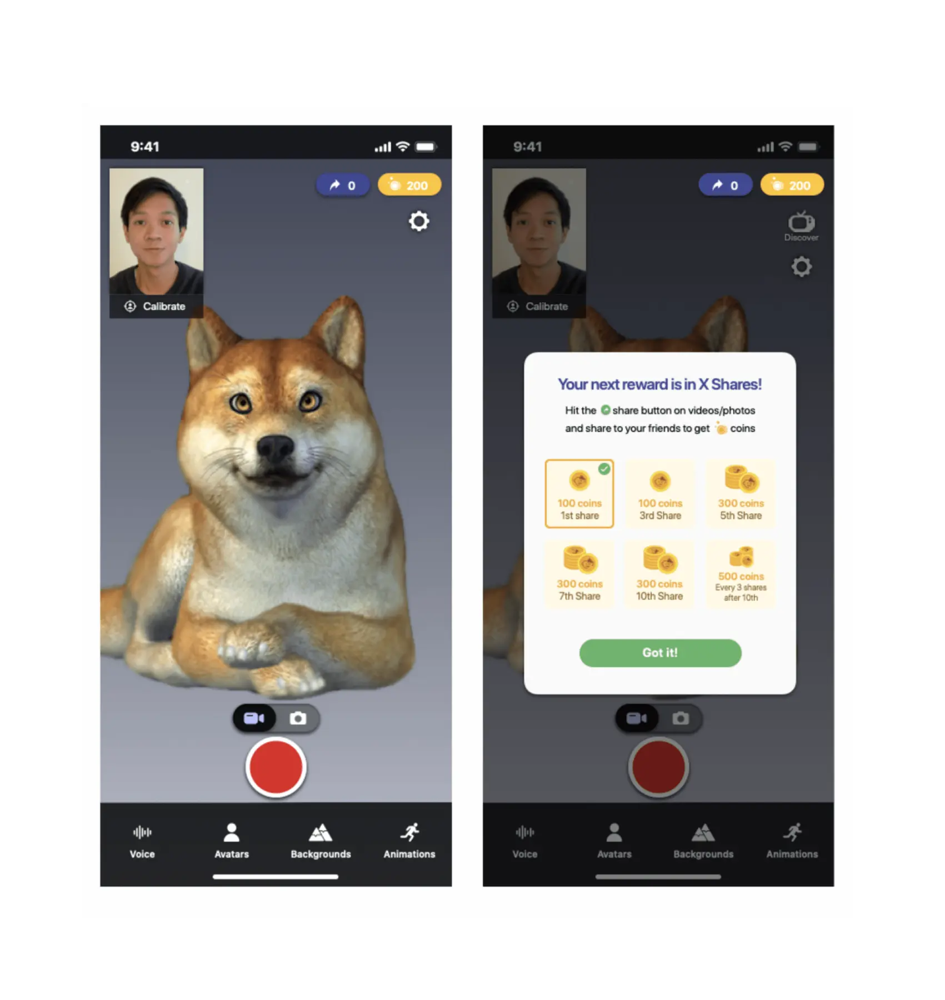
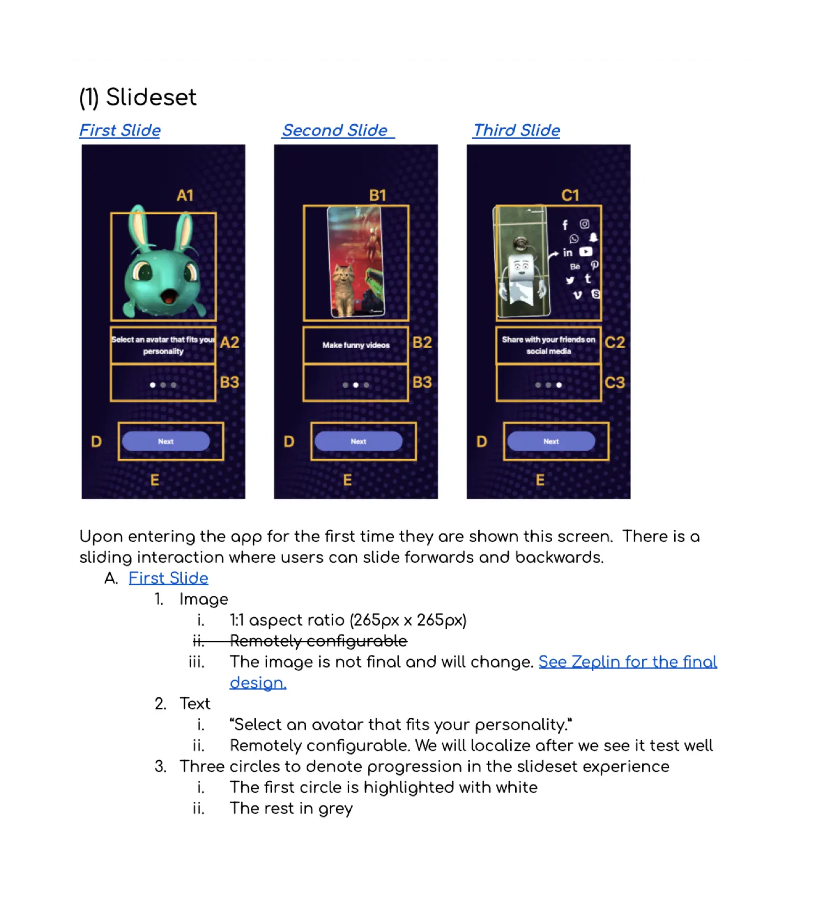
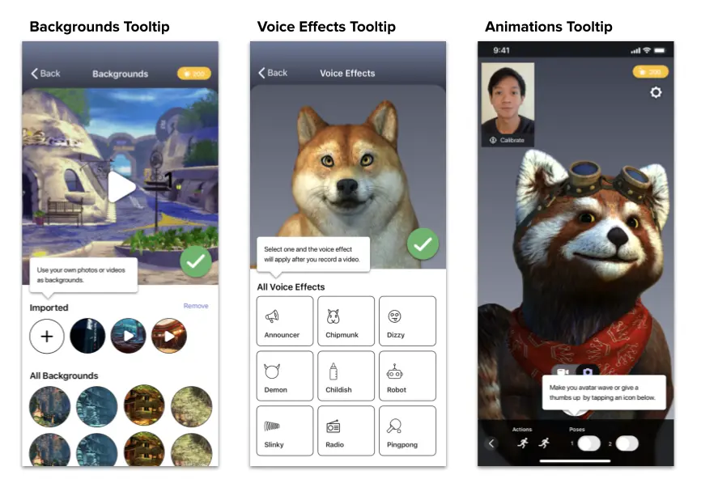
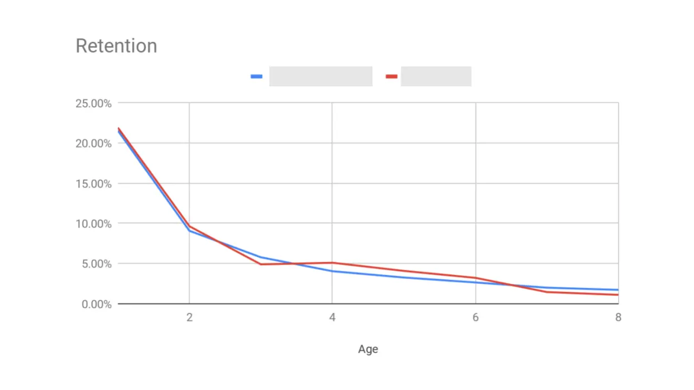

An app for people into memes and streaming.
Animaze is a mass-market app that uses face tracking to let people create entertaining videos and photos as 3D avatars.
Once we had user-testing capability, we found our promoters were deeply into memes and online streaming — but struggled to find the confidence to do either. The avatar was the mask that made it possible.

People liked it. They just didn’t come back.
Before building anything, the team checks a feature against the roadmap and our existing qualitative and quantitative research. Three signals stood out.
- Features went unused. One feature that tested well as a concept was used only 20% of the time.
- Day-1 retention lagged. Our last major release missed its retention targets despite shipping what users asked for.
- Discover inspired creation. Users browsing our Instagram-style Discover feed were referencing it as inspiration for their own videos.
Three bets, written down.
- Feature tour. A simple walk through the core feature set will raise day-1 retention because people understand how to use the app.
- Discover path. Showing what others make will help people understand what’s possible — and make entertaining videos themselves.
- Rewards. A simple milestone system will improve long-term retention and create a natural acquisition loop through sharing.
Inheriting a project mid-flight.
We’d hired a contractor experienced in first-time experiences, but COVID-19 forced a pivot and the project landed with me. With tight timelines, I kept the contractor’s structure, built it into a high-fidelity prototype, gathered team feedback, and went straight to testing.
In parallel I was deep in a rewards feature: share what you make, hit milestones, earn coins. We planned to weave it into onboarding.


“Instead of a dynamic map, we shipped a counter and a static one. Engineering time is a design material.”
A scalable tooltips system
Testers wanted to understand Animations and Backgrounds, so I designed event-triggered tooltips that could scale to any future feature without new onboarding work.

Qualitative first, then at scale.
Ten unmoderated testers on UserTesting went through both the Avatar and Discover prototypes.
- Avatar flow won on helpfulness — 4.6 versus 4.2 out of 5.
- But Discover created curiosity. Some testers who picked neither wanted to do both.
- All ten found it helpful, yet Animations and Backgrounds remained unclear.
- Rewards were misread. How shares earned rewards wasn’t landing visually.
I ran a concept test across three entry-point icons, then split-tested the winner against the original. The trophy won — it implied the user gets something, where the share icon read ambiguously.
On the staging build, a second round of ten target users split again: the Avatar path produced a net-positive NPS, Discover a net-negative one — though Discover users made noticeably more entertaining videos.
Three shards, one answer.
We bought installs through Facebook to reach significance and split users into control, Discover and Avatar shards.

Decisions
- Pushed all new users through the Avatar path in subsequent releases.
- Began revising the FTUE after research showed TikTok creators were our most common user.
- Explored how to introduce Discover videos without the net-negative first impression.